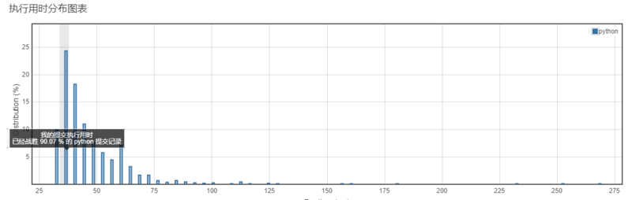
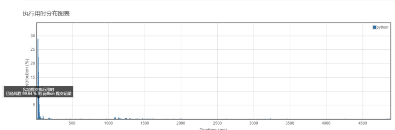
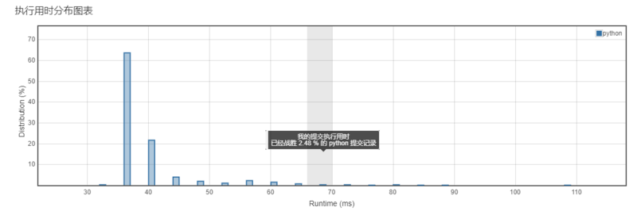
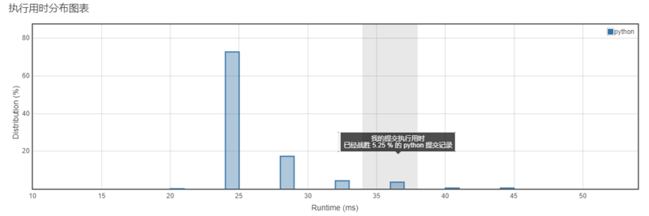
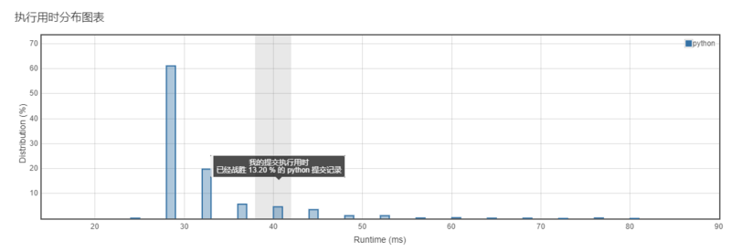
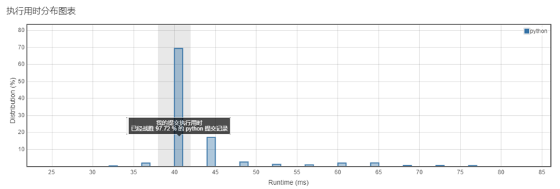
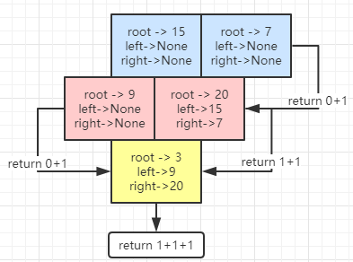

<!DOCTYPE html>
<html>
<head><meta name="generator" content="Hexo 3.8.0">
  <meta charset="utf-8">
  
  <title>Aloha | Gaga酱的奇思妙想</title>
  <meta name="viewport" content="width=device-width, initial-scale=1, maximum-scale=1">
  
    <meta name="keywords" content="萌萌の嘎嘎">
  
  
  
  
  <meta name="description" content="今天特别的喜欢递归啦~">
<meta name="keywords" content="leetcode,python">
<meta property="og:type" content="article">
<meta property="og:title" content="小李飞刀：做题第七弹！">
<meta property="og:url" content="http://yoursite.com/2019/03/12/小李飞刀：做题第七弹！/index.html">
<meta property="og:site_name" content="Gaga酱の奇思妙想">
<meta property="og:description" content="今天特别的喜欢递归啦~">
<meta property="og:locale" content="zh-Hans">
<meta property="og:image" content="http://yoursite.com/2019/03/12/小李飞刀：做题第七弹！/1.png">
<meta property="og:image" content="http://yoursite.com/2019/03/12/小李飞刀：做题第七弹！/2.png">
<meta property="og:image" content="http://yoursite.com/2019/03/12/小李飞刀：做题第七弹！/3.png">
<meta property="og:image" content="http://yoursite.com/2019/03/12/小李飞刀：做题第七弹！/4.png">
<meta property="og:image" content="http://yoursite.com/2019/03/12/小李飞刀：做题第七弹！/5.png">
<meta property="og:image" content="http://yoursite.com/2019/03/12/小李飞刀：做题第七弹！/6.png">
<meta property="og:image" content="http://yoursite.com/2019/03/12/小李飞刀：做题第七弹！/7.png">
<meta property="og:updated_time" content="2019-09-24T15:20:41.507Z">
<meta name="twitter:card" content="summary">
<meta name="twitter:title" content="小李飞刀：做题第七弹！">
<meta name="twitter:description" content="今天特别的喜欢递归啦~">
<meta name="twitter:image" content="http://yoursite.com/2019/03/12/小李飞刀：做题第七弹！/1.png">
  
  <link rel="icon" href="/css/images/favicon.png">
  
    <link href="//fonts.googleapis.com/css?family=Source+Code+Pro" rel="stylesheet" type="text/css">
  
  <link href="https://fonts.googleapis.com/css?family=Open+Sans|Montserrat:700" rel="stylesheet" type="text/css">
  <link href="https://fonts.googleapis.com/css?family=Roboto:400,300,300italic,400italic" rel="stylesheet" type="text/css">
  <link href="//cdn.bootcss.com/font-awesome/4.6.3/css/font-awesome.min.css" rel="stylesheet">
  <style type="text/css">
    @font-face{font-family:futura-pt;src:url(https://use.typekit.net/af/9749f0/00000000000000000001008f/27/l?subset_id=2&fvd=n5) format("woff2");font-weight:500;font-style:normal;}
    @font-face{font-family:futura-pt;src:url(https://use.typekit.net/af/90cf9f/000000000000000000010091/27/l?subset_id=2&fvd=n7) format("woff2");font-weight:500;font-style:normal;}
    @font-face{font-family:futura-pt;src:url(https://use.typekit.net/af/8a5494/000000000000000000013365/27/l?subset_id=2&fvd=n4) format("woff2");font-weight:lighter;font-style:normal;}
    @font-face{font-family:futura-pt;src:url(https://use.typekit.net/af/d337d8/000000000000000000010095/27/l?subset_id=2&fvd=i4) format("woff2");font-weight:400;font-style:italic;}</style>
    
  <link rel="stylesheet" id="athemes-headings-fonts-css" href="//fonts.googleapis.com/css?family=Yanone+Kaffeesatz%3A200%2C300%2C400%2C700&amp;ver=4.6.1" type="text/css" media="all">

  <link rel="stylesheet" id="athemes-headings-fonts-css" href="//fonts.googleapis.com/css?family=Oswald%3A300%2C400%2C700&amp;ver=4.6.1" type="text/css" media="all">
  <link rel="stylesheet" href="/css/style.css">

  <script src="/js/jquery-3.1.1.min.js"></script>

  <!-- Bootstrap core CSS -->
  <link rel="stylesheet" href="/css/bootstrap.css">
  <link rel="stylesheet" href="/css/fashion.css">
  <link rel="stylesheet" href="/css/glyphs.css">
  <!-- Global site tag (gtag.js) - Google Analytics -->
  <script async src="https://www.googletagmanager.com/gtag/js?id=UA-142486934-1"></script>
  <script>
    window.dataLayer = window.dataLayer || [];
    function gtag(){dataLayer.push(arguments);}
    gtag('js', new Date());

    gtag('config', 'UA-142486934-1');
  </script>


</head>
</html>


  <body data-spy="scroll" data-target="#toc" data-offset="50">


  


<header id="allheader" class="site-header" role="banner">
  <div class="clearfix container">
      <div class="site-branding">

          <h3 class="site-title">
            
              <a href="/" title="Gaga酱の奇思妙想" rel="home"> Gaga酱の奇思妙想 </a>
            
          </h3>
          
          
            <div class="site-description">深水静流</div>
          
            
          <nav id="main-navigation" class="main-navigation" role="navigation">
            <a class="nav-open">Menu</a>
            <a class="nav-close">Close</a>

            <div class="clearfix sf-menu">
              <ul id="main-nav" class="menu sf-js-enabled sf-arrows" style="touch-action: pan-y;">
                    
                      <li class="menu-item menu-item-type-custom menu-item-object-custom menu-item-home menu-item-1663"> <a class href="/">冲鸭❤</a> </li>
                    
                      <li class="menu-item menu-item-type-custom menu-item-object-custom menu-item-home menu-item-1663"> <a class href="/archives">archives❤</a> </li>
                    
                      <li class="menu-item menu-item-type-custom menu-item-object-custom menu-item-home menu-item-1663"> <a class href="/categories">碎碎念的基本法❤</a> </li>
                    
                      <li class="menu-item menu-item-type-custom menu-item-object-custom menu-item-home menu-item-1663"> <a class href="/tags">tags❤</a> </li>
                    
                      <li class="menu-item menu-item-type-custom menu-item-object-custom menu-item-home menu-item-1663"> <a class href="/about">岁月如歌❤</a> </li>
                    
                      <li class="menu-item menu-item-type-custom menu-item-object-custom menu-item-home menu-item-1663"> <a class href="/books">阅❤</a> </li>
                    
                      <li class="menu-item menu-item-type-custom menu-item-object-custom menu-item-home menu-item-1663"> <a class href="/movies">影❤</a> </li>
                    
              </ul>
            </div>
          </nav>

      </div>
  </div>
</header>


  <div id="container">
    <div id="wrap">
            
      <div id="content" class="outer">
        
          <section id="main" style="float:none;"><article id="post-小李飞刀：做题第七弹！" style="width: 66%; float:left;" class="article article-type-post" itemscope itemprop="blogPost">
  <div id="articleInner" class="clearfix post-1016 post type-post status-publish format-standard has-post-thumbnail hentry category-template-2 category-uncategorized tag-codex tag-edge-case tag-featured-image tag-image tag-template">
    
    
      <header class="article-header">
        
  
    <h1 class="thumb" itemprop="name">
      小李飞刀：做题第七弹！
    </h1>
  

      </header>
    
    <div class="article-meta">
      
	<a href="/2019/03/12/小李飞刀：做题第七弹！/" class="article-date">
	  <time datetime="2019-03-12T14:39:39.000Z" itemprop="datePublished">March 12, 2019</time>
	</a>

      
	<span class="ico-folder"></span>
    <a class="article-category-link" href="/categories/小李の放学后/">小李の放学后</a>
 
      
    </div>
    <div class="article-entry" itemprop="articleBody">
      
        <p></p>
<h4 id="写在前面的话"><a href="#写在前面的话" class="headerlink" title="写在前面的话"></a>写在前面的话</h4><p>做做做题，慢慢上手了就觉得刷题速度变快了，果然还是有点笨~<br><strong>希望最后一窍快点通吧~</strong></p>
<h4 id="开始做题"><a href="#开始做题" class="headerlink" title="开始做题"></a>开始做题</h4><h5 id="第一题"><a href="#第一题" class="headerlink" title="第一题"></a>第一题</h5><p><strong><a href="https://leetcode-cn.com/problems/majority-element/" target="_blank" rel="noopener">169. 求众数</a></strong><br><strong>难度：简单</strong><br>给定一个大小为 n 的数组，找到其中的众数。众数是指在数组中出现次数大于<code>⌊ n/2 ⌋</code>的元素。<br>你可以假设数组是非空的，并且给定的数组总是存在众数。给定一个大小为 n 的数组，找到其中的众数。众数是指在数组中出现次数大于<code>⌊ n/2 ⌋</code>的元素。<br>你可以假设数组是非空的，并且给定的数组总是存在众数。<br><strong>我的题解：</strong><br><figure class="highlight ceylon"><table><tr><td class="code"><pre><span class="line"><span class="keyword">class</span> Solution(<span class="keyword">object</span>):</span><br><span class="line">    def majorityElement(self, nums):</span><br><span class="line">        <span class="string">"""</span></span><br><span class="line"><span class="string">        :type nums: List[int]</span></span><br><span class="line"><span class="string">        :rtype: int</span></span><br><span class="line"><span class="string">        """</span></span><br><span class="line">        <span class="keyword">value</span> = nums[<span class="number">0</span>]</span><br><span class="line">        count = <span class="number">0</span> </span><br><span class="line">        <span class="keyword">for</span> i <span class="keyword">in</span> nums:</span><br><span class="line">            <span class="keyword">if</span> <span class="keyword">value</span> == i:</span><br><span class="line">                count = count + <span class="number">1</span></span><br><span class="line">            <span class="keyword">else</span>:</span><br><span class="line">                <span class="keyword">if</span> count == <span class="number">0</span>:</span><br><span class="line">                    <span class="keyword">value</span> = i</span><br><span class="line">                    count = <span class="number">1</span></span><br><span class="line">                    <span class="keyword">continue</span></span><br><span class="line">                count =count - <span class="number">1</span></span><br><span class="line">        <span class="keyword">return</span> <span class="keyword">value</span></span><br></pre></td></tr></table></figure></p>
<p></p>
<p><strong>我的思路：</strong><br>这题参考了评论的题解，做了两次，明白了来龙去脉。<br>中心思想就是：按顺序遍历数字，存在不同的数字就抵消相应的count，存在相同数字则增加，最后总能获取到唯一一个不会被抵消全部的数字，就是众数了。</p>
<h5 id="第二题"><a href="#第二题" class="headerlink" title="第二题"></a>第二题</h5><p><strong><a href="https://leetcode-cn.com/problems/single-number/" target="_blank" rel="noopener">136. 只出现一次的数字</a></strong><br><strong>难度：简单</strong><br>给定一个非空整数数组，除了某个元素只出现一次以外，其余每个元素均出现两次。找出那个只出现了一次的元素。</p>
<blockquote>
<p><strong>说明</strong>：<br>你的算法应该具有线性时间复杂度。 你可以不使用额外空间来实现吗？</p>
</blockquote>
<p><strong>我的题解：</strong><br><figure class="highlight python"><table><tr><td class="code"><pre><span class="line"><span class="class"><span class="keyword">class</span> <span class="title">Solution</span><span class="params">(object)</span>:</span></span><br><span class="line">    <span class="function"><span class="keyword">def</span> <span class="title">singleNumber</span><span class="params">(self, nums)</span>:</span></span><br><span class="line">        <span class="string">"""</span></span><br><span class="line"><span class="string">        :type nums: List[int]</span></span><br><span class="line"><span class="string">        :rtype: int</span></span><br><span class="line"><span class="string">        """</span></span><br><span class="line">        a = <span class="number">0</span> </span><br><span class="line">        <span class="keyword">for</span> num <span class="keyword">in</span> nums:</span><br><span class="line">            a = a ^ num</span><br><span class="line">        <span class="keyword">return</span> a</span><br></pre></td></tr></table></figure></p>
<p></p>
<p><strong>我的思路：</strong><br><code>异或</code>，两个相同的数字的计算结果为0，最后剩余的则为唯一值</p>
<h5 id="第三题"><a href="#第三题" class="headerlink" title="第三题"></a>第三题</h5><p><strong><a href="https://leetcode-cn.com/problems/remove-duplicates-from-sorted-list/" target="_blank" rel="noopener">83. 删除排序链表中的重复元素</a></strong><br><strong>难度：简单</strong><br>给定一个排序链表，删除所有重复的元素，使得每个元素只出现一次。<br><strong>我的题解：</strong><br><figure class="highlight python"><table><tr><td class="code"><pre><span class="line"><span class="comment"># Definition for singly-linked list.</span></span><br><span class="line"><span class="comment"># class ListNode(object):</span></span><br><span class="line"><span class="comment">#     def __init__(self, x):</span></span><br><span class="line"><span class="comment">#         self.val = x</span></span><br><span class="line"><span class="comment">#         self.next = None</span></span><br><span class="line"></span><br><span class="line"><span class="class"><span class="keyword">class</span> <span class="title">Solution</span><span class="params">(object)</span>:</span></span><br><span class="line">    <span class="function"><span class="keyword">def</span> <span class="title">deleteDuplicates</span><span class="params">(self, head)</span>:</span></span><br><span class="line">        <span class="string">"""</span></span><br><span class="line"><span class="string">        :type head: ListNode</span></span><br><span class="line"><span class="string">        :rtype: ListNode</span></span><br><span class="line"><span class="string">        """</span></span><br><span class="line">        a = head</span><br><span class="line">        <span class="keyword">if</span> <span class="keyword">not</span> a:</span><br><span class="line">            <span class="keyword">return</span> a</span><br><span class="line">        <span class="keyword">while</span> head.next:</span><br><span class="line">            <span class="keyword">if</span> head.next.val == head.val <span class="keyword">and</span> head.next.next == <span class="literal">None</span>:</span><br><span class="line">                head.next = <span class="literal">None</span></span><br><span class="line">            <span class="keyword">elif</span> head.next.val == head.val <span class="keyword">and</span> head.next.next:</span><br><span class="line">                head.next = head.next.next</span><br><span class="line">            <span class="keyword">else</span>:</span><br><span class="line">                head = head.next</span><br><span class="line">        <span class="keyword">return</span> a</span><br></pre></td></tr></table></figure></p>
<p></p>
<p><strong>我的思路：</strong><br>当存在前后节点一致的时候，则前一个节点的next指向后一个节点的next，跳过即可。<br><strong>其他：</strong><br>因为链表的结构指向的是内存，遍历完之后指向最后的节点，所以需要一个<code>a</code>指向头结点。</p>
<h5 id="第四题"><a href="#第四题" class="headerlink" title="第四题"></a>第四题</h5><p><strong><a href="https://leetcode-cn.com/problems/same-tree/" target="_blank" rel="noopener">100. 相同的树</a></strong><br><strong>难度：简单</strong><br>给定两个二叉树，编写一个函数来检验它们是否相同。<br>如果两个树在结构上相同，并且节点具有相同的值，则认为它们是相同的。<br><strong>我的题解：</strong><br><figure class="highlight python"><table><tr><td class="code"><pre><span class="line"><span class="comment"># Definition for a binary tree node.</span></span><br><span class="line"><span class="comment"># class TreeNode(object):</span></span><br><span class="line"><span class="comment">#     def __init__(self, x):</span></span><br><span class="line"><span class="comment">#         self.val = x</span></span><br><span class="line"><span class="comment">#         self.left = None</span></span><br><span class="line"><span class="comment">#         self.right = None</span></span><br><span class="line"></span><br><span class="line"><span class="class"><span class="keyword">class</span> <span class="title">Solution</span><span class="params">(object)</span>:</span></span><br><span class="line">    <span class="function"><span class="keyword">def</span> <span class="title">isSameTree</span><span class="params">(self, p, q)</span>:</span></span><br><span class="line">        <span class="string">"""</span></span><br><span class="line"><span class="string">        :type p: TreeNode</span></span><br><span class="line"><span class="string">        :type q: TreeNode</span></span><br><span class="line"><span class="string">        :rtype: bool</span></span><br><span class="line"><span class="string">        """</span></span><br><span class="line">        <span class="keyword">if</span> <span class="keyword">not</span> p <span class="keyword">and</span> <span class="keyword">not</span> q:</span><br><span class="line">            <span class="keyword">return</span> <span class="literal">True</span></span><br><span class="line">        <span class="keyword">if</span> p <span class="keyword">and</span> q:</span><br><span class="line">            <span class="keyword">if</span> p.val == q.val:</span><br><span class="line">                <span class="keyword">return</span> self.isSameTree(p.left,q.left) <span class="keyword">and</span> self.isSameTree(p.right,q.right)</span><br><span class="line">            <span class="keyword">else</span>:</span><br><span class="line">                <span class="keyword">return</span> <span class="literal">False</span></span><br><span class="line">        <span class="keyword">else</span>:</span><br><span class="line">            <span class="keyword">return</span> <span class="literal">False</span></span><br></pre></td></tr></table></figure></p>
<p></p>
<p><strong>我的思路：</strong><br><code>递归</code>，主要是判断两个节点的值是否一致，一致的前提下，判断向下的左右节点及更向下是否一致。</p>
<h5 id="第五题"><a href="#第五题" class="headerlink" title="第五题"></a>第五题</h5><p><strong><a href="https://leetcode-cn.com/problems/merge-sorted-array/" target="_blank" rel="noopener">88. 合并两个有序数组</a></strong><br><strong>难度：简单</strong><br>给定两个有序整数数组 nums1 和 nums2，将 nums2 合并到 nums1 中，使得 num1 成为一个有序数组。</p>
<blockquote>
<p>说明:</p>
<ul>
<li>初始化 nums1 和 nums2 的元素数量分别为 m 和 n。</li>
<li>你可以假设 nums1 有足够的空间（空间大小大于或等于 m + n）来保存 nums2 中的元素。</li>
</ul>
</blockquote>
<p><strong>我的题解：</strong><br><figure class="highlight python"><table><tr><td class="code"><pre><span class="line"><span class="class"><span class="keyword">class</span> <span class="title">Solution</span><span class="params">(object)</span>:</span></span><br><span class="line">    <span class="function"><span class="keyword">def</span> <span class="title">merge</span><span class="params">(self, nums1, m, nums2, n)</span>:</span></span><br><span class="line">        <span class="string">"""</span></span><br><span class="line"><span class="string">        :type nums1: List[int]</span></span><br><span class="line"><span class="string">        :type m: int</span></span><br><span class="line"><span class="string">        :type nums2: List[int]</span></span><br><span class="line"><span class="string">        :type n: int</span></span><br><span class="line"><span class="string">        :rtype: None Do not return anything, modify nums1 in-place instead.</span></span><br><span class="line"><span class="string">        """</span></span><br><span class="line">        <span class="keyword">while</span> m&gt;<span class="number">0</span> <span class="keyword">and</span> n&gt;<span class="number">0</span>:</span><br><span class="line">            <span class="keyword">if</span> nums1[m<span class="number">-1</span>] &gt;=nums2[n<span class="number">-1</span>]:</span><br><span class="line">                nums1[m+n<span class="number">-1</span>] = nums1[m<span class="number">-1</span>]</span><br><span class="line">                m -= <span class="number">1</span></span><br><span class="line">            <span class="keyword">else</span>:</span><br><span class="line">                nums1[m+n<span class="number">-1</span>] = nums2[n<span class="number">-1</span>]</span><br><span class="line">                n -= <span class="number">1</span></span><br><span class="line">        <span class="keyword">if</span> n &gt;<span class="number">0</span> :</span><br><span class="line">            nums1[:n] = nums2[:n]<span class="class"><span class="keyword">class</span> <span class="title">Solution</span><span class="params">(object)</span>:</span></span><br><span class="line">    <span class="function"><span class="keyword">def</span> <span class="title">merge</span><span class="params">(self, nums1, m, nums2, n)</span>:</span></span><br><span class="line">        <span class="string">"""</span></span><br><span class="line"><span class="string">        :type nums1: List[int]</span></span><br><span class="line"><span class="string">        :type m: int</span></span><br><span class="line"><span class="string">        :type nums2: List[int]</span></span><br><span class="line"><span class="string">        :type n: int</span></span><br><span class="line"><span class="string">        :rtype: None Do not return anything, modify nums1 in-place instead.</span></span><br><span class="line"><span class="string">        """</span></span><br><span class="line">        <span class="keyword">while</span> m&gt;<span class="number">0</span> <span class="keyword">and</span> n&gt;<span class="number">0</span>:</span><br><span class="line">            <span class="keyword">if</span> nums1[m<span class="number">-1</span>] &gt;=nums2[n<span class="number">-1</span>]:</span><br><span class="line">                nums1[m+n<span class="number">-1</span>] = nums1[m<span class="number">-1</span>]</span><br><span class="line">                m -= <span class="number">1</span></span><br><span class="line">            <span class="keyword">else</span>:</span><br><span class="line">                nums1[m+n<span class="number">-1</span>] = nums2[n<span class="number">-1</span>]</span><br><span class="line">                n -= <span class="number">1</span></span><br><span class="line">        <span class="keyword">if</span> n &gt;<span class="number">0</span> :</span><br><span class="line">            nums1[:n] = nums2[:n]</span><br></pre></td></tr></table></figure></p>
<p></p>
<p><strong>我的思路：</strong><br>因为nums1[m+n]为空的部分，所以我们可以从后向前写，判断两个数组的值，更大的数字不断向后挪，挪到一定程度的时候，剩余部分则为更长的数组的剩余未判断部分。</p>
<h5 id="第六题"><a href="#第六题" class="headerlink" title="第六题"></a>第六题</h5><p><strong><a href="https://leetcode-cn.com/problems/maximum-dep" target="_blank" rel="noopener">104. 二叉树的最大深度</a></strong><br><strong>难度：简单</strong><br>给定一个二叉树，找出其最大深度。<br>二叉树的深度为根节点到最远叶子节点的最长路径上的节点数。</p>
<blockquote>
<p><strong>说明</strong>: 叶子节点是指没有子节点的节点。</p>
</blockquote>
<p><strong>我的题解：</strong><br><figure class="highlight python"><table><tr><td class="code"><pre><span class="line"><span class="comment"># Definition for a binary tree node.</span></span><br><span class="line"><span class="comment"># class TreeNode(object):</span></span><br><span class="line"><span class="comment">#     def __init__(self, x):</span></span><br><span class="line"><span class="comment">#         self.val = x</span></span><br><span class="line"><span class="comment">#         self.left = None</span></span><br><span class="line"><span class="comment">#         self.right = None</span></span><br><span class="line"></span><br><span class="line"><span class="class"><span class="keyword">class</span> <span class="title">Solution</span><span class="params">(object)</span>:</span></span><br><span class="line">    <span class="function"><span class="keyword">def</span> <span class="title">maxDepth</span><span class="params">(self, root)</span>:</span></span><br><span class="line">        <span class="string">"""</span></span><br><span class="line"><span class="string">        :type root: TreeNode</span></span><br><span class="line"><span class="string">        :rtype: int</span></span><br><span class="line"><span class="string">        """</span></span><br><span class="line">        <span class="keyword">if</span> <span class="keyword">not</span> root:</span><br><span class="line">            <span class="keyword">return</span> <span class="number">0</span></span><br><span class="line">        <span class="keyword">if</span> root.right <span class="keyword">is</span> <span class="literal">None</span> <span class="keyword">and</span> root.left <span class="keyword">is</span> <span class="literal">None</span>:</span><br><span class="line">            <span class="keyword">return</span> <span class="number">1</span></span><br><span class="line">        <span class="keyword">return</span> max(self.maxDepth(root.right),self.maxDepth(root.left))+<span class="number">1</span></span><br></pre></td></tr></table></figure></p>
<p></p>
<p><strong>我的思路：</strong></p>
<p><br><code>递归</code>图上为调用栈的情况，不断向下寻找更远的根节点。</p>
<ul>
<li>基线判断为：节点是否为空</li>
<li>递归判断为：节点不为空且左节点或右节点还有值</li>
</ul>
<h4 id="总结"><a href="#总结" class="headerlink" title="总结"></a>总结</h4><p>最近在看<code>《算法图解》</code>，感觉对<code>递归</code>理解更深一点，但学习之后重要的是实践，还是要多做题。</p>
      
    </div>
    <footer class="entry-meta entry-footer">
      
	<span class="ico-folder"></span>
    <a class="article-category-link" href="/categories/小李の放学后/">小李の放学后</a>

      
  <span class="ico-tags"></span>
  <ul class="article-tag-list"><li class="article-tag-list-item"><a class="article-tag-list-link" href="/tags/leetcode/">leetcode</a></li><li class="article-tag-list-item"><a class="article-tag-list-link" href="/tags/python/">python</a></li></ul>

      
        
	<div id="comment">
	
	<!-- 多说评论框 start -->
	 <div class="ds-thread" data-thread-key="/2019/03/12/小李飞刀：做题第七弹！/" data-title="小李飞刀：做题第七弹！" data-url="http://yoursite.com/2019/03/12/小李飞刀：做题第七弹！/"></div>
	<!-- 多说评论框 end -->
	<!-- 多说公共JS代码 start (一个网页只需插入一次) -->
	<script type="text/javascript">
	var duoshuoQuery = {short_name:"iTimeTraveler"};
	  (function() {
	    var ds = document.createElement('script');
	    ds.type = 'text/javascript';ds.async = true;
	    ds.src = (document.location.protocol == 'https:' ? 'https:' : 'http:') + '//static.duoshuo.com/embed.js';
	    ds.charset = 'UTF-8';
	    (document.getElementsByTagName('head')[0] 
	     || document.getElementsByTagName('body')[0]).appendChild(ds);
	  })();
	  </script>
	<!-- 多说公共JS代码 end -->
	
	</div>
	<link rel="stylesheet" href="/css/comment.css">


      
    </footer>
    <hr class="entry-footer-hr">
  </div>
  
    
<nav id="article-nav">
  
    <a href="/2019/03/17/Y想-190317/" id="article-nav-newer" class="article-nav-link-wrap">
      <strong class="article-nav-caption">Newer</strong>
      <div class="article-nav-title">
        
          Y想-190317
        
      </div>
    </a>
  
  
    <a href="/2019/03/10/Y想-190310/" id="article-nav-older" class="article-nav-link-wrap">
      <strong class="article-nav-caption">Older</strong>
      <div class="article-nav-title">Y想-190310</div>
    </a>
  
</nav>

  
</article>


<!-- Table of Contents -->

  <aside id="sidebar">
    <div id="toc" class="toc-article">
    <strong class="toc-title">Contents</strong>
    
      <ol class="nav"><li class="nav-item nav-level-4"><a class="nav-link" href="#写在前面的话"><span class="nav-number">1.</span> <span class="nav-text">写在前面的话</span></a></li><li class="nav-item nav-level-4"><a class="nav-link" href="#开始做题"><span class="nav-number">2.</span> <span class="nav-text">开始做题</span></a><ol class="nav-child"><li class="nav-item nav-level-5"><a class="nav-link" href="#第一题"><span class="nav-number">2.1.</span> <span class="nav-text">第一题</span></a></li><li class="nav-item nav-level-5"><a class="nav-link" href="#第二题"><span class="nav-number">2.2.</span> <span class="nav-text">第二题</span></a></li><li class="nav-item nav-level-5"><a class="nav-link" href="#第三题"><span class="nav-number">2.3.</span> <span class="nav-text">第三题</span></a></li><li class="nav-item nav-level-5"><a class="nav-link" href="#第四题"><span class="nav-number">2.4.</span> <span class="nav-text">第四题</span></a></li><li class="nav-item nav-level-5"><a class="nav-link" href="#第五题"><span class="nav-number">2.5.</span> <span class="nav-text">第五题</span></a></li><li class="nav-item nav-level-5"><a class="nav-link" href="#第六题"><span class="nav-number">2.6.</span> <span class="nav-text">第六题</span></a></li></ol></li><li class="nav-item nav-level-4"><a class="nav-link" href="#总结"><span class="nav-number">3.</span> <span class="nav-text">总结</span></a></li></ol>
    
    </div>
  </aside>


</section>
        
      </div>

    </div>
    <!-- <nav id="mobile-nav">
  
    <a href="/" class="mobile-nav-link">冲鸭❤</a>
  
    <a href="/archives" class="mobile-nav-link">archives❤</a>
  
    <a href="/categories" class="mobile-nav-link">碎碎念的基本法❤</a>
  
    <a href="/tags" class="mobile-nav-link">Tags❤</a>
  
    <a href="/about" class="mobile-nav-link">岁月如歌❤</a>
  
    <a href="/books" class="mobile-nav-link">阅❤</a>
  
    <a href="/movies" class="mobile-nav-link">影❤</a>
  
</nav> -->
    <footer id="footer" class="site-footer">
  

  <div class="clearfix container">
      <div class="site-info">
	      &copy; 2019 Gaga酱の奇思妙想 All Rights Reserved.
        
      </div>
      <div class="site-credit">
        Theme by <a href="https://github.com/iTimeTraveler/hexo-theme-hipaper" target="_blank">hipaper</a>
      </div>
  </div>
</footer>


<!-- min height -->

<script>
    var wrapdiv = document.getElementById("wrap");
    var contentdiv = document.getElementById("content");

    wrapdiv.style.minHeight = document.body.offsetHeight - document.getElementById("allheader").offsetHeight - document.getElementById("footer").offsetHeight + "px";
    contentdiv.style.minHeight = document.body.offsetHeight - document.getElementById("allheader").offsetHeight - document.getElementById("footer").offsetHeight + "px";


    <!-- headerblur min height -->
    
    
</script>
    
<div style="display: none;">
  <script src="https://s11.cnzz.com/z_stat.php?id=1260716016&web_id=1260716016" language="JavaScript"></script>
</div>

<!-- mathjax config similar to math.stackexchange -->

<script type="text/x-mathjax-config">
  MathJax.Hub.Config({
    tex2jax: {
      inlineMath: [ ['$','$'], ["\\(","\\)"] ],
      processEscapes: true
    }
  });
</script>

<script type="text/x-mathjax-config">
    MathJax.Hub.Config({
      tex2jax: {
        skipTags: ['script', 'noscript', 'style', 'textarea', 'pre', 'code']
      }
    });
</script>

<script type="text/x-mathjax-config">
    MathJax.Hub.Queue(function() {
        var all = MathJax.Hub.getAllJax(), i;
        for(i=0; i < all.length; i += 1) {
            all[i].SourceElement().parentNode.className += ' has-jax';
        }
    });
</script>

<script type="text/javascript" src="https://cdn.mathjax.org/mathjax/latest/MathJax.js?config=TeX-AMS-MML_HTMLorMML">
</script>


  <link rel="stylesheet" href="/fancybox/jquery.fancybox.css">
  <script src="/fancybox/jquery.fancybox.pack.js"></script>


<script src="/js/script.js"></script>
<script src="/js/bootstrap.js"></script>
<script src="/js/main.js"></script>


  <script type="text/javascript" src="js/love.js"></script>
  <script type="text/javascript" src="js/float.js"></script>
  <script type="text/javascript" src="js/typewriter.js"></script>
  <script type="text/javascript" color="0,104,183" opacity="1" zindex="-1" count="50" src="js/particle.js"></script>
  </div>

  <a id="rocket" href="#top" class=""></a>
  <script type="text/javascript" src="/js/totop.js" async=""></script>
</body>
</html>
